01 先固定證據，再問未知
證據、查詢、邊際化與正規化 · 插於 lec02bni-u01-p2 之後
02 有圖還要有表，才能算機率
貝氏網路因子分解與CPT · 插於 lec02bni-u01-p3 之後
03 四種組合，怎麼越算越多
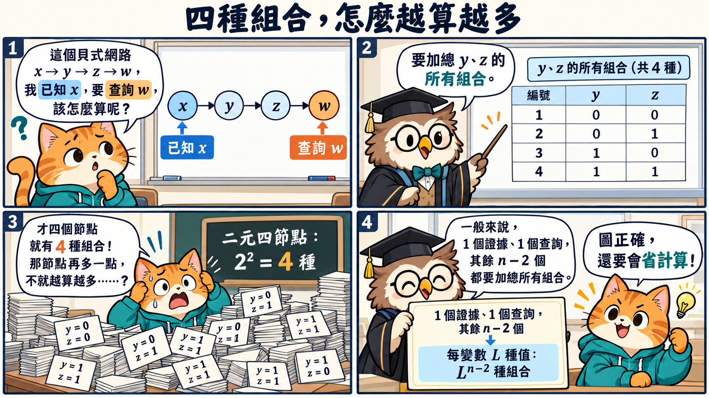
暴力邊際化的指數組合數 · 插於 lec02bni-u01-p5 之後
04 同一組表，二元機率要成對
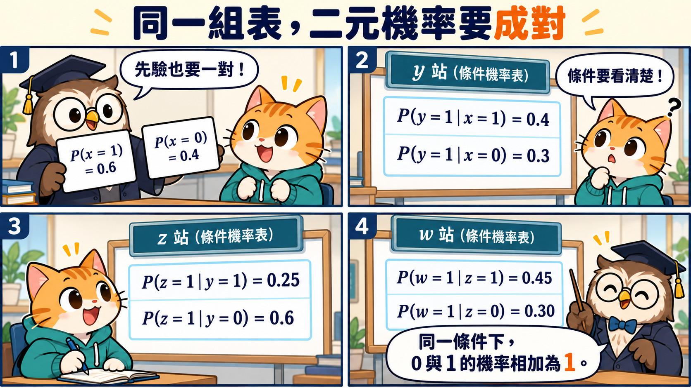
範例的先驗、條件機率與互補 · 插於 lec02bni-u02-p3 之後
05 訊息接力：零點四六怎麼來
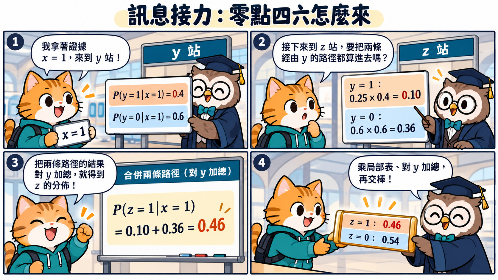
下傳訊息、局部加總消去y與快取 · 插於 lec02bni-u02-p6 之後
06 最後一棒，要查的是 w 等於零
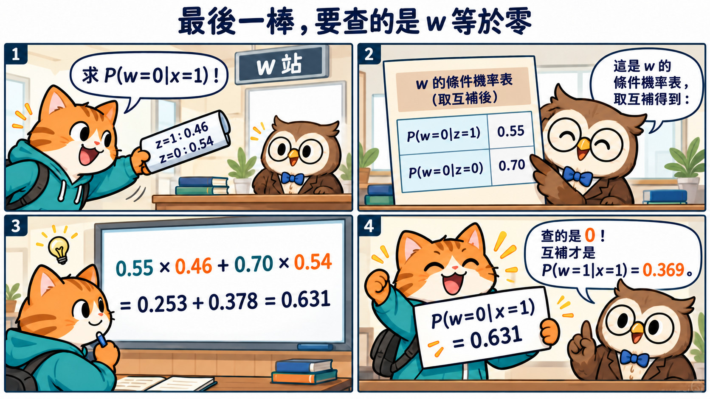
下傳w=0查詢與互補 · 插於 lec02bni-u02-p7 之後
07 反推之前，先算證據有多常見
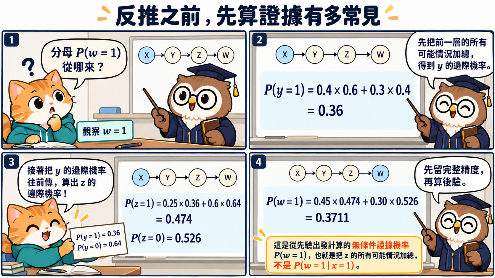
邊際分布、先驗傳遞與證據機率 · 插於 lec02bni-u02-p8 之後
08 貝氏定理，把證據帶回上游
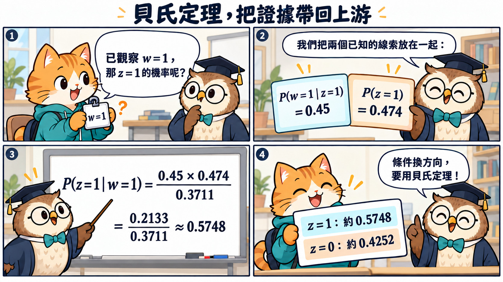
反向查詢與Bayes正規化 · 插於 lec02bni-u02-p9 之後
09 再往上一站：先換條件，再加總
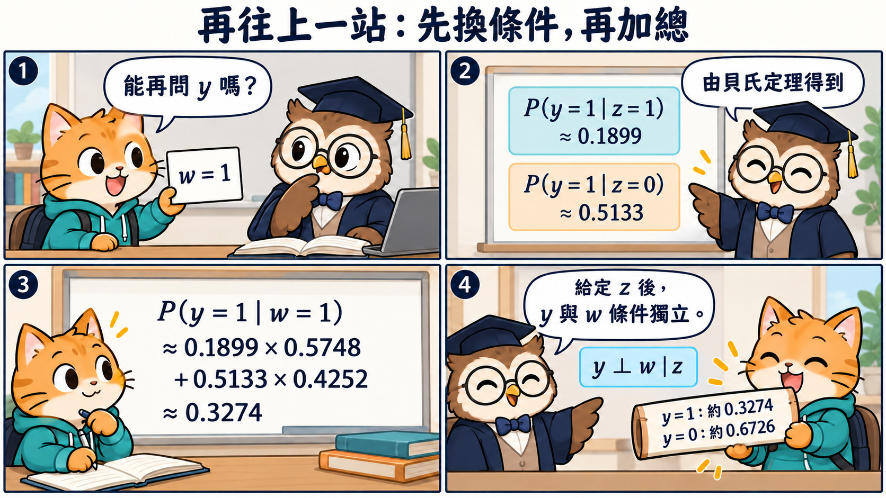
用鏈上條件獨立反推y · 插於 lec02bni-u02-p10 之後
10 反向接力，最後問 x 等於零
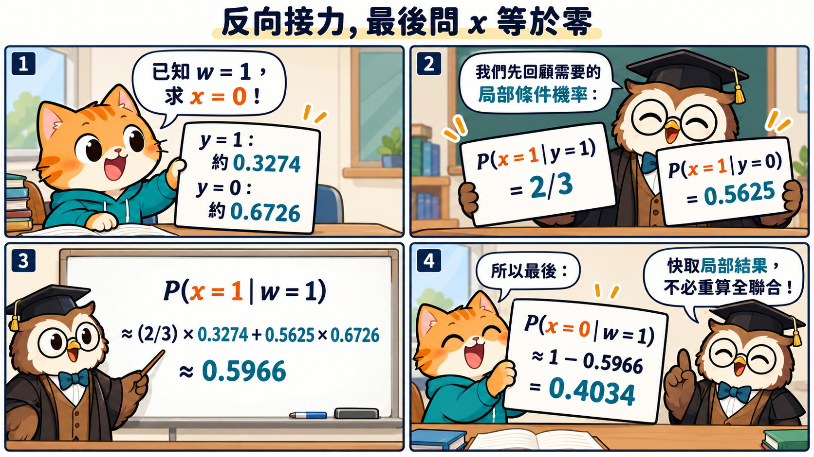
反推x、互補與重用局部結果 · 插於 lec02bni-u02-p12 之後
11 大總和拆小，小結果留下來
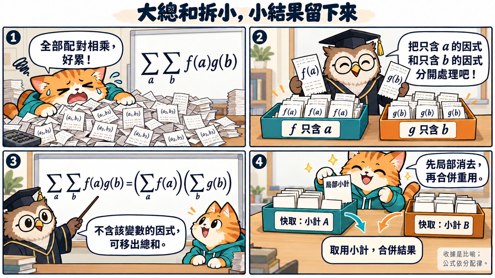
分配律、變數消去與快取 · 插於 lec02bni-u03-p2 之後
12 省下來的不只是固定倍數
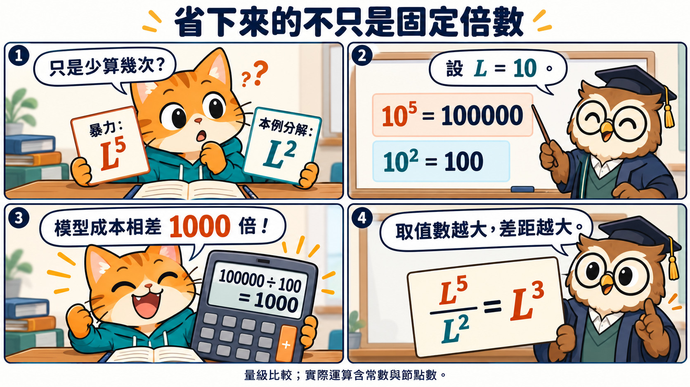
特定結構的複雜度量級比較 · 插於 lec02bni-u03-p3 之後
13 消去誰在先，會改變中間表
消去順序與因式依賴影響成本 · 插於 lec02bni-u03-p5 之後
14 訊息可以反向，結構不用翻面
結構方向、推論方向與觀察和干預之別 · 插於 lec02bni-u04-p4 之後
15 先畫關係，再用資料填機率
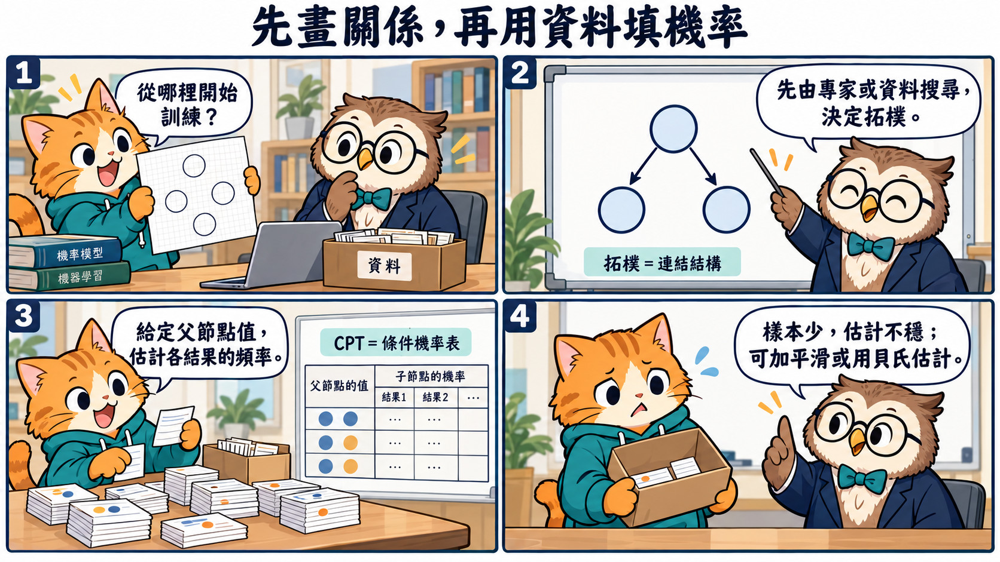
結構選擇、CPT估計與少樣本平滑 · 插於 lec02bni-u05-p1 之後
16 一般情況難，不代表每張圖都難
單一連通與一般精確推論難度 · 插於 lec02bni-u05-p2 之後
17 算不動時，兩條近似路線
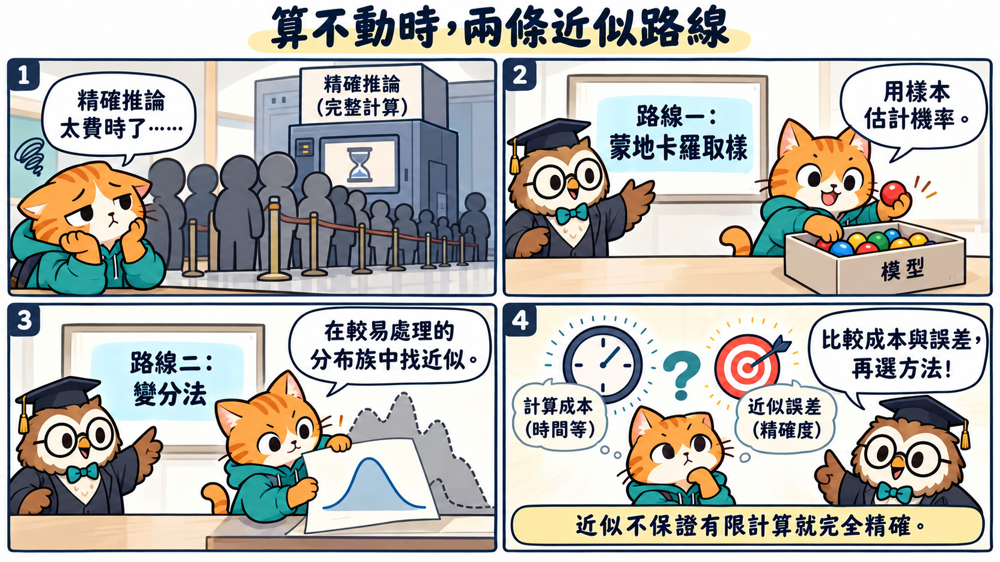
蒙地卡羅取樣與變分近似 · 插於 lec02bni-u05-p3 之後